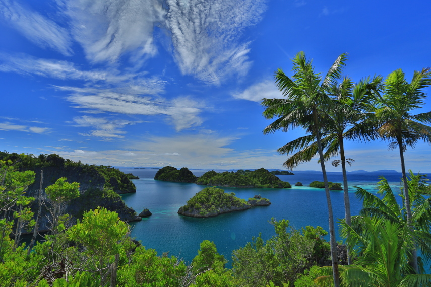

Kepulauan Raja Ampat
Kabupaten Raja Ampat memiliki sekitar 600 pulau, baik yang berukuran kecil maupun besar. Empat pulau yang relatif cukup besar adalah Pulau Misool, Salawati, Batanta dan Waigeo. Dari seluruh pulau hanya sekitar 35 pulau yang berpenghuni sedangkan pulau lainnya tidak berpenghuni dan sebagian besar belum memiliki nama. Pada awal perkembangan, Kabupaten Raja Ampat sesuai dengan UU RI No. 26 Tahun 2002, terdiri dari 7 distrik. Sejalan dengan perkembangan kabupaten, maka hingga tahun 2010 telah terjadi beberapa kali pemekaran distrik dan kampung, sehingga pada saat ini kabupaten ini telah menjadi 24 distrik.
Kepulauan Raja Ampat merupakan rangkaian empat gugusan pulau yang berdekatan dan berlokasi di barat bagian Kepala Burung (Vogelkoop) Pulau Papua. Secara administrasi, gugusan ini berada di bawah Kabupaten Raja Ampat, Provinsi Papua Barat. Kepulauan ini sekarang menjadi tujuan para penyelam yang tertarik akan keindahan pemandangan bawah lautnya. Empat gugusan pulau yang menjadi anggotanya dinamakan menurut empat pulau terbesarnya, yaitu Pulau Waigeo, Pulau Misool, Pulau Salawati, dan Pulau Batanta.
Asal mula nama Raja Ampat menurut mitos masyarakat setempat berasal dari seorang wanita yang menemukan tujuh telur. Empat butir di antaranya menetas menjadi empat orang pangeran yang berpisah dan masing-masing menjadi raja yang berkuasa di Waigeo, Salawati, Misool Timur dan Misool Barat. Sementara itu, tiga butir telur lainnya menjadi hantu, seorang wanita, dan sebuah batu.
Keindahan Raja Ampat
Berbicara mengenai Raja Ampat tidak dapat lepas dari salah satu ikon dari tempat ini, yakni Wayag. Wayag merupakan jejeran batu karang yang berbalut warna kehijauan yang menyebar di birunya lautan. Panorama yang luar biasa inilah yang menjadikan wisata Raja Ampat mendunia. Berfoto dengan latar belakang gugusan batu karang tentu menjadi hal yang wajib dilakukan. Selain Wayag, panorama gugusan batu karang yang hijau juga dapat dinikmati di Pianemo. Tempat ini berada di ketinggian sehingga wisatawan dapat menikmati perpaduan luar biasa dari gugusan batu karang, birunya laut, dan langit biru cerah. Pianemo ini sering disebut sebagai Wayag versi mini.
Selesai dengan gugusan batu karang, saatnya menjelajahi indahnya wisata pasir putih Raja Ampat. Ada satu tempat yang memiliki pasir putih yang menawan, yakni Pasir Timbul. Pulau Pasir ini berdekatan dengan Pulau Mansuar.
Seperti halnya pulau pasir lainnya, Pasir Timbul akan menunjukkan pasir putihnya ketika air laut tengah surut. Hamparan pasir putih berkilauan akan menjadi momen yang indah dan pas untuk berswafoto. Beralih dari laut, wisatawan dapat mengunjungi Air Terjun Batanta dengan pemandangannya yang aduhai. Nuansa segar dari air terjun juga akan menjadi penyejuk setelah seharian menjelajah air asin.
Selain Air Terjun Batanta, wisatawan juga dapat melihat langsung burung yang menjadi ikon Papua, Cendrawasih. Burung asli dari Papua ini dapat ditemui di Desa Sawinggrai. Memang perlu usaha yang cukup keras agar dapat melihat burung ini mengingat keberadaannya yang langka.
Berbagai keindahan alam Raja Ampat membuktikan kalau tempat ini bukan hanya soal laut saja. Masih ada air terjun maupun habitat asli Cendrawasih yang dapat menjadi alternatif bagi wisatawan. Hal ini menunjukkan bahwa Raja Ampat memiliki wisata alam yang sangat lengkap.
Menikmati Panorama Bawah Laut Raja Ampat
Raja Ampat menyimpan keindahan bawah laut yang memikat. Setidaknya terdapat sekitar 1500 spesies ikan, 500an spesies koral, dan lebih dari 600 hewan tak bertulang belakang di bawah laut di seluruh wilayah Raja Ampat. Hal ini terbilang wajar mengingat 75% spesies ikan di dunia dapat ditemukan di Raja Ampat. Ini termasuk ikan pari manta yang lebar tubuhnya dapat mencapai 2 meter.
Aktivitas menyelam pun menjadi pilihan utama untuk menikmati keindahan bawah laut Raja Ampat. Wisatawan dapat melihat sendiri bagaimana indahnya bawah laut raja ampat, atau bila beruntung, bisa berenang bersama ikan pari manta yang ikonik itu. Berbagai spot wisata menyelam telah tersedia di Raja Ampat sehingga wisatawan tidak perlu risau.
Wisatawan dapat berkunjung ke Pulau Misool. Pulau ini merupakan salah satu dari empat pulau besar yang berada di Raja Ampat. Pulau Misool sendiri terdiri atas empat bagian, yakni Misool Barat, Misool Utara, Misool Timur, dan Misool Selatan.
Pulau Misool merupakan salah satu destinasi yang paling banyak dikunjungi wisatawan, khususnya bagi pecinta keindahan bawah laut. Wisatawan dapat melihat sendiri beragam ikan yang cantik. Selain itu, terdapat laut lepas di Misool bagian selatan, yang mana menyimpan fauna besar seperti pari manta dan lumba-lumba.
Selain Pulau Misool, wisatawan juga dapat memilih Pulau Kri untuk aktivitas menyelam. Ini adalah tempat penyelaman paling sempurna di Raja Ampat. Bagaimana tidak, hanya dengan sekali penyelaman, wisatawan dapat menemukan hingga 300 lebih spesies ikan. Dipadu dengan karang kecil yang indah, menyelam di Pulau Kri akan menjadi pengalaman yang tak terlupakan.
Selain dua lokasi tersebut, masih banyak spot wisata di Raja Ampat yang menawarkan keindahan bawah laut yang indah. Sebut saja Star Lagoon, Magic Mountain, Blue Magic, Selat Dampier, dan lain-lain. Tentu beragam spot diving ini akan membuat wisatawan memiliki banyak opsi untuk menikmati indahnya bawah laut Raja Ampat.